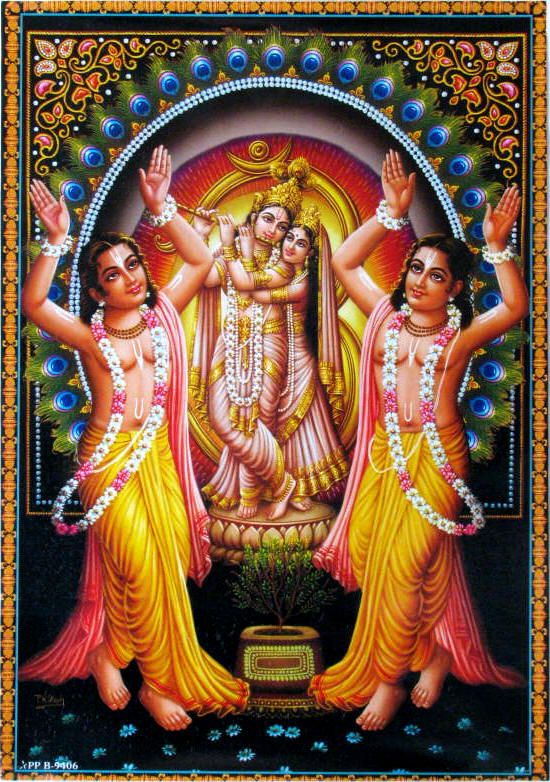
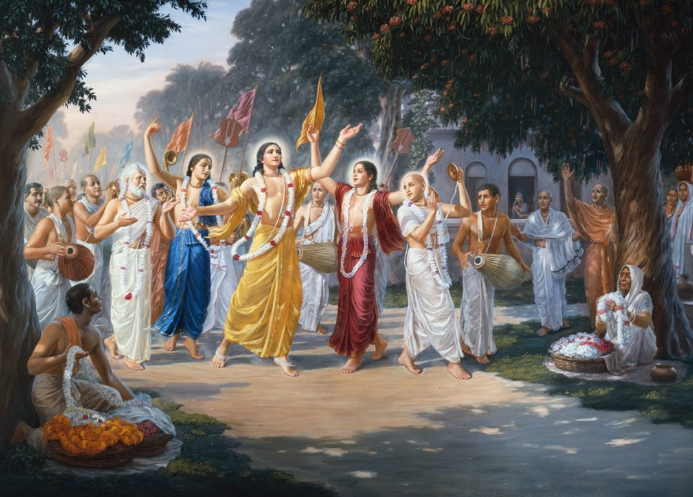
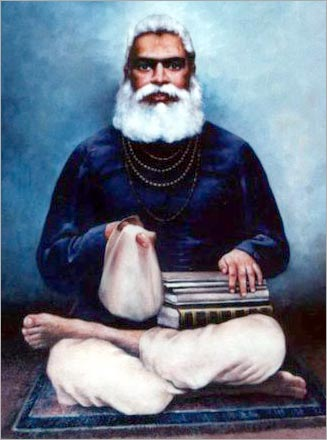
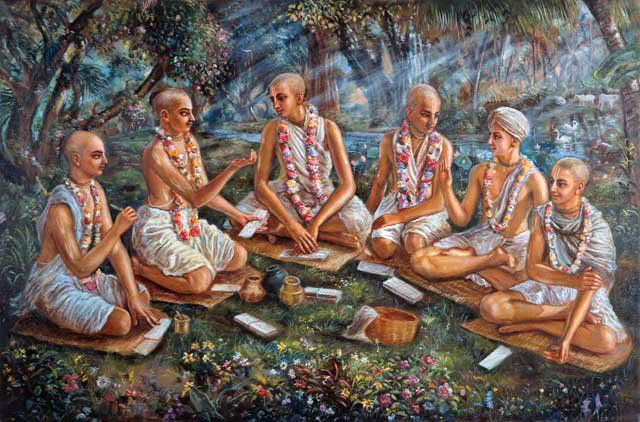
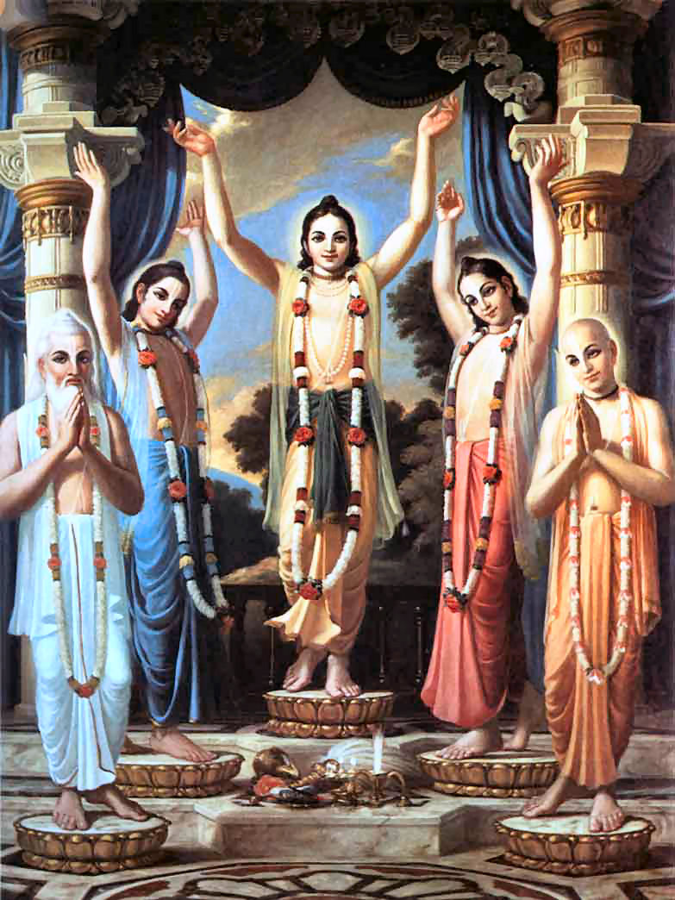
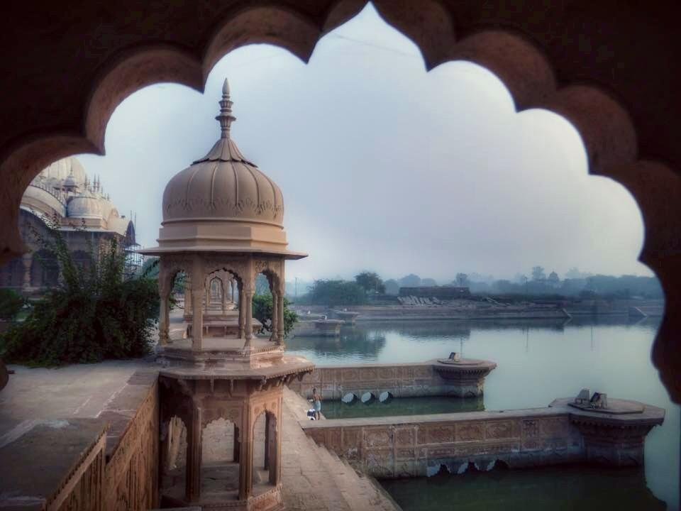
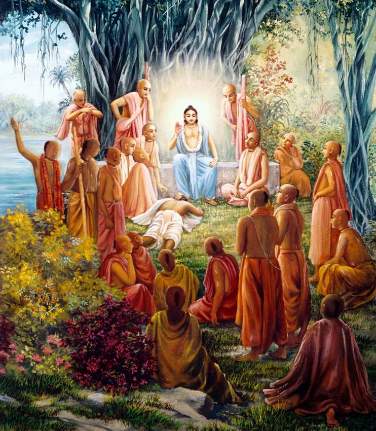
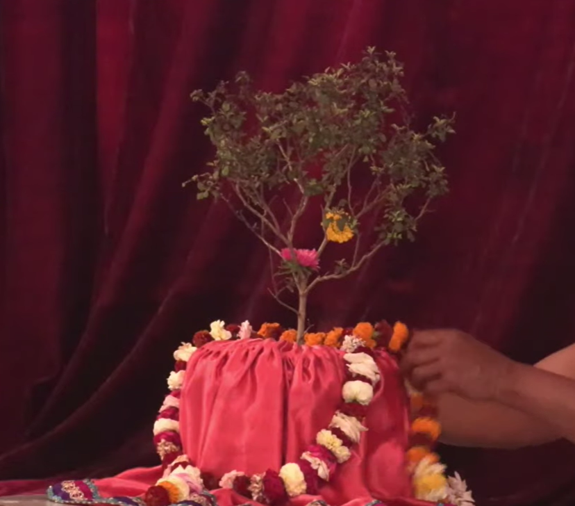

Мангала Арати

Шри Шри Гурваштака
Примеры: Прабхупада 1, Прабхупада 2, Кадамба, Krishna
1
Сам́са̄ра-да̄ва̄нала-лӣд̣ха-лока
Тра̄н̣а̄йа ка̄рун̣йа-гхана̄-гханатвам
Пра̄птасйа калйа̄н̣а-гун̣а̄рн̣авасйа
Ванде гурох̣ ш́рӣ-чаран̣а̄равиндам
Духовный учитель получает благословение из океана милости. Подобно тому как облако, проливающее дождь, гасит лесной пожар, духовный учитель гасит пылающий огонь материального существования и спасает людей, охваченных этим пламенем. Такой духовный учитель — океан благих качеств, и я в глубоком почтении склоняюсь к его лотосным стопам.
2
Маха̄прабхох̣ кӣртана-нр̣итйа-гӣта
Ва̄дитра-ма̄дйан-манасо расена
Рома̄н̃ча-кампа̄ш́ру таран̇га-бха̄джо
Ванде гурох̣ ш́рӣ-чаран̣а̄равиндам
Движение санкиртаны Господа Чайтаньи Махапрабху — источник непреходящей радости для духовного учителя, который порой повторяет святое имя, порой танцует, охваченный экстазом, а порой поет и играет на музыкальных инструментах. Его ум наслаждается нектаром чистой преданности, и потому волосы на его теле временами встают дыбом, по телу пробегает дрожь, а слезы ручьями льются из глаз. В глубоком почтении я склоняюсь к лотосным стопам такого духовного учителя.
3
Ш́рӣ-виграха̄ра̄дхана-нитйа-на̄на̄
Ш́р̣инга̄ра тан-мандира ма̄рджана̄дау
Йуктасйа бхакта̄м̇ш́ ча нийун̃джато ’пи
Ванде гурох̣ ш́рӣ-чаран̣а̄равиндам
Всегда занятый поклонением Шри Шри Радхе и Кришне в храме, духовный учитель вовлекает в него также своих учеников. Они облачают Божества в прекрасные одежды, надевают на Них украшения, моют Их храм и занимаются другими видами служения, поклоняясь таким образом Господу. В глубоком почтении я склоняюсь к лотосным стопам такого духовного учителя.
4
Чатур-видха-ш́рӣ-бхагават-праса̄да
Сва̄дв-анна-тр̣ипта̄н хари-бхакта-сан̇гха̄н
Кр̣итвайва тр̣иптим̇ бхаджатах̣ садаива
Ванде гурох̣ ш́рӣ-чаран̣а̄равиндам
Духовный учитель предлагает Кришне чудесную пищу четырех видов. И когда духовный учитель видит, что преданные, вкусив бхагават-прасада, полностью удовлетворены, он испытывает радость. В глубоком почтении я склоняюсь к лотосным стопам такого духовного учителя.
5
Ш́рӣ-ра̄дхика̄-ма̄дхавайор апа̄ра
Ма̄дхурйа-лӣла̄-гун̣а-рӯпа-на̄мна̄м
Прати-кш̣ан̣а̄-сва̄дана лолупасйа
Ванде гурох̣ ш́рӣ-чаран̣а̄равиндам
Духовный учитель всегда жаждет слушать повествования о бесчисленных любовных играх Радхики и Мадхавы, Их имена и описания Их качеств и форм и всегда готов воспевать Их. Духовный учитель жаждет наслаждаться этим непрестанно, и потому я в глубоком почтении склоняюсь к лотосным стопам такого духовного учителя.
6
Никун̃джа-йӯно рати-кели-сиддхйаи
Йа̄ йа̄либхир йуктир апекш̣ан̣ӣйа̄
Татра̄ти-да̄кш̣йа̄д ати-валлабхасйа
Ванде гурох̣ ш́рӣ-чаран̣а̄равиндам
Духовный учитель очень дорог Господу Кришне, ибо он очень умело помогает гопи, которые, проявляя необыкновенное искусство, делают в рощах Вриндаваны различные приготовления, чтобы довести любовные игры Радхи и Кришны до совершенства. В глубочайшем смирении я склоняюсь к лотосным стопам такого духовного учителя.
7
Сакш̣а̄д-харитвена самаста-ш́а̄страир
Уктас татха̄ бха̄вйата эва садбхих̣
Кинту прабхор йах̣ прийа эва тасйа
Ванде гурох̣ ш́рӣ-чаран̣а̄равиндам
Духовному учителю следует оказывать то же почтение, что и Верховному Господу, ибо он — Его ближайший слуга. Так гласят все богооткровенные писания, и этому указанию следуют все авторитеты. Духовный учитель — истинный представитель Шри Хари (Кришны), и я в глубоком почтении склоняюсь к его лотосным стопам.
8
Йасйа праса̄да̄д-бхагавад-праса̄дох̣
Йасйа̄праса̄да̄н на гатих̣ куто ’пи
Дхйа̄йам̇ стувам̇с тасйа йаш́ас три-сандхйам̇
Ванде гурох̣ ш́рӣ-чаран̣а̄равиндам
Благословение Кришны можно обрести лишь по милости духовного учителя. Без его милости любые попытки достичь совершенства обречены на провал. Поэтому я должен всегда помнить о своем духовном учителе и прославлять его. Не меньше трех раз в день должен я склоняться в глубоком почтении к лотосным стопам своего духовного учителя.
***
Ш́рӣмад-гурор аш̣т̣акам этад уччаир
Бра̄хме мухӯрте пат̣хати прайатна̄т
Йас тена вр̣инда̄вана на̄тха са̄кш̣а̄т-
Севаива лабхйа̄ джануш̣о ’нта эва
Тот, кто с чистым сердцем воспевает эти восемь молитв духовному учителю во время брахма-мухурты (96 минут до восхода Солнца), в момент смерти обретает служение Кришне, Повелителю Вриндавана.
Шрила Прабхупада пранати
(пранама-мантра)
नमः ॐ विष्णु पादय, कृष्ण पृष्ठाय भूतले,
श्रीमते भक्ति वेदांत स्वामिन इति नामिने ।
नमस्ते सरस्वते देवे गौर वाणी प्रचारिणे,
निर्विशेष शून्य-वादी पाश्चात्य देश तारिणे ।।
Нама Ом̇ Виш̣н̣у-па̄да̄йа
Кр̣ш̣н̣а-преш̣т̣ха̄йа бхӯ-тале
Ш́рӣмате Бхактиведа̄нта-
Сва̄мин ити на̄мине
В глубоком почтении я склоняюсь перед Его Божественной Милостью А. Ч. Бхактиведантой Свами Прабхупадой, который очень дорог Господу Кришне, ибо для него нет иного прибежища, кроме лотосных стоп Господа.
Намас те Са̄расвате деве
Гаура-ва̄н̣ӣ-прача̄рин̣е
Нирвиш́еш̣а-ш́ӯнйава̄ди
Па̄ш́ча̄тйа-деш́а-та̄рин̣е
О духовный учитель, слуга Сарасвати Госвами, мы склоняемся перед тобой в глубоком почтении. Ты милостиво проповедуешь учение Господа Чайтаньядевы и несешь освобождение странам Запада, в котором широко распространился имперсонализм и философия пустоты.
Панча-Таттва маха-мантра

जय श्री कृष्ण चैतन्य, प्रभु नित्यानंद,
श्री अद्वैत, गदाधर, श्रीवास आदि गौर भक्त वृन्द ।।
(джайа) Ш́рӣ-Кр̣иш̣н̣а-Чаитанйа
Прабху Нитйа̄нанда
Ш́рӣ-Адваита Гада̄дхара
Ш́рӣва̄са̄ди Гаура-бхакта-вр̣инда
Я выражаю свое глубокое почтение Шри Кришне Чайтанье, Прабху Нитьянанде, Шри Адвайте, Гададхаре, Шривасе и всем остальным, следующим путем преданного служения.
Харе Кришна маха-мантра
हरे कृष्ण हरे कृष्ण, कृष्ण कृष्ण हरे हरे ।
हरे राम हरे राम, राम राम हरे हरे ।।
Харе Кр̣иш̣н̣а Харе Кр̣иш̣н̣а
Кр̣иш̣н̣а Кр̣иш̣н̣а Харе Харе
Харе Ра̄ма Харе Ра̄ма
Ра̄ма Ра̄ма Харе Харе
О всепривлекающий, о всерадующий Господь, о, энергия Господа, прошу, позволь мне преданно служить Тебе!
Молитва према-дхвани

Джайа Ом̇ Виш̣н̣у-па̄да парамахам̇са
Паривра̄джака̄ча̄рйа аш̣т̣оттара-ш́ата
Ш́рӣ Ш́рӣмад Абхайа-Чаранаравинда
Бхактиведанта Свами Махараджа Прабхупа̄да
— кӣ джайа!
Вся слава ачарии Ом Вишну-паде 108 триданди Госвами Абхаю Чаранаравинде Свами Прабхупаде, путешествующему по всей Земле, проповедующему славу Хари, ачарье, который находится на высочайшем уровне санньясы и участвующему в вечных играх Господа.
Джайа Ом̇ Виш̣н̣у-па̄да парамахам̇са
Паривра̄джака̄ча̄рйа аш̣т̣оттара-ш́ата
Ш́рӣ Ш́рӣмад Бхактисиддханта Сарасватӣ
Госва̄мӣ Махараджа Прабхупа̄да
— кӣ джайа!
Вся слава ачарье Ом Вишну-пада 108 Триданди Госвами Бхактисиддханте Сарасвати Прабхупаде, который путешествует по всей земле, проповедуя славу Хари, и который находится на высочайшей ступени санньясы.
Джайа Ом̇ Виш̣н̣у-па̄да Ш́рӣла Гауракишора
даса Бабаджи Махараджа
— кӣ джайа!
Вся слава Шриле Гауракишору дасу Бабаджи!

Джайа Ом̇ Виш̣н̣у-па̄да Ш́рӣла Сач-чид-ананда
Бхактивинода Тхакура
— кӣ джайа!
Вся слава Шриле Сач-чид-ананде Бхактивиноду Тхакуру!

Джайа Ом̇ Виш̣н̣у-па̄да вайш̣н̣ава-са̄рвабхаума
Ш́рӣла Джаганна̄тха да̄с Ба̄ба̄джӣ Маха̄ра̄джа
— кӣ джайа!
Вся слава Вайшнава Сарвабхаума Шриле Джаганнатхе дасу Бабаджи!

Джайа Ш́рӣ Рӯпа, Сана̄тана, Бхатта Рагхуна̄тха,
Ш́рӣ Джӣва, Гопа̄ла Бхатта, Да̄са Рагхуна̄тха
Шад-Госва̄мӣ Прабху
— кӣ джайа!
Вся слава шести Госвами: Шри Рупе, Санатане, Рагхунатха Бхатте, Дживе, Гопала Бхатте и Рагхунатха дасу.
На̄ма̄ча̄рйа Ш́рӣла Харида̄са Т̣ха̄кура
— кӣ джайа!
Вся слава нама-ачарье, Шриле Харидасу Тхакуру!

Премсе кахо Ш́рӣ-Кр̣иш̣н̣а-Чаитанйа,
Прабху Нитйа̄нанда, Ш́рӣ Адваита, Гада̄дхара,
Ш́рӣва̄са̄ди Гаура-бхакта-вр̣инда
— кӣ джайа!
Взывайте с любовью к именам Шри Кришны Чайтаньи, Прабху Нитьянанды, Шри Адвайты, Шри Гададхары, Шривасы и ко всем преданным Господа Чайтаньи!
Ш́рӣ Ш́рӣ Ра̄дха̄-Кр̣ш̣н̣а, Гопа-Гопӣна̄тха,
Ш́йа̄ма-Кун̣д̣а, Ра̄дха̄-Кун̣д̣а, Гирирадж-Говардхана
— кӣ джайа!
Вся слава Радха-Кришне, пастушкáм и пастýшкам, коровам, Шьямакунде, Радха-Кунде и холму Говардхану.

Ш́рӣ Майапур дха̄ма — кӣ джайа!
Ш́рӣ Вр́инда̄вана дха̄ма — кӣ джайа!
Пурушоттама Кшетра Джаганна̄тх Пурӣ дха̄ма — кӣ джайа!
Ган̇га̄-ма̄йи — кӣ джайа!
Ямуна̄-ма̄йи — кӣ джайа!
Бхакти-девӣ — кӣ джайа!
Туласӣ-махарани — кӣ джайа!
Ананта кот̣и вайш̣н̣ава-вр̣ин̣да — кӣ джайа!
Ш́рӣ Харина̄ма Санкӣртана — кӣ джайа!
Грантха-раджа Ш́рӣмад-Бхагаватам махапурана — кӣ джайа!
Вся слава Шри Майяпур-дхаме. Вся слава Шри Вриндавана-дхаме. Вся слава Шри Джаганнатх Пури-дхаме. Вся слава Ганга-деви. Вся слава Ямуна-деви. Вся слава Бхакти-деви. Вся слава Туласи-деви. Вся слава бесчисленным вайшнавам. Вся слава совместному воспеванию святого имени. Вся слава царю книг, «Шримад-Бхагаватам».
ИСККОН-вартмана-гуру-вринда — кӣ джайа!
Самавета бхакта-вринда — кӣ джайа!
Гаура-премананда хари-харибол!
Вся слава гуру ИСККОН. Вся слава собравшимся преданным. Воспевайте имена Хари! Хари! в экстазе чайтанья-премы.

Вся слава собравшимся преданным
— Харе Кр̣иш̣н̣а (3 раза)
Вся слава Ш́ри Ш́ри Гуру и Ш́ри Гауранге
«Джайа Ш́рӣ Ш́рӣ-Гуру-Гауранга» (3 раза)
Вся слава Ш́рӣле Прабхупа̄де!
Шри Нрсимха Пранама
Намас те Нарасим̇ха̄йа
Прахла̄да̄хла̄да-да̄йине
Хиран̣йакаш́ипор вакш̣ах̣-
Ш́ила̄-т̣ан̇ка-накха̄лайе
Я склоняюсь перед Господом Нарасимхой, который приносит радость Прахладе Махарадже и чьи ногти вонзаются, словно резцы, в каменную грудь демона Хираньякашипу.
Ито Нр̣исим̇хах̣ парато Нр̣исим̇хо
Йато йато йа̄ми тато Нр̣исим̇хах̣
Бахир Нр̣исим̇хо хр̣идайе Нр̣исим̇хо
Нр̣исим̇хам а̄дим̇ ш́аран̣ам̇ прападйе
Господь Нрисимха и здесь и там. Куда бы я ни пошел — везде Господь Нрисимха. Он и в сердце, и вовне. Я предаюсь Господу Нрисимхе, источнику всего сущего и высшему прибежищу для всех.
Тава кара-камала-варе накхам адбхута-ш́р̣ин̇гам̇
Далита-Хиран̣йакаш́ипу тану-бхр̣ин̇гам
Кеш́ава дхр̣ита-нарахари-рӯпа
Джайа джагадӣш́а Харе
Джайа джагадӣш́а Харе
Джайа джагадӣш́а Харе
О Кешава! О Владыка вселенной! О Господь Хари, принявший образ человекольва! Слава Тебе! С такой же легкостью, с какой человек может раздавить пальцами осу, Ты Своими чудесными острыми когтями разорвал на части тело демона Хираньякашипу, схожего с осой.
Джайа Нр̣сим̇хадев джайа Нр̣сим̇хадев
джайа Нр̣сим̇хадев джайа Нр̣сим̇хадев
Джайа Нара-Хари джайа Нара-Хари
джайа Нара-Хари джайа Нара-Хари
Джайа Прахла̄д Махара̄дж джайа Прахла̄д Махара̄дж
джайа Прахла̄д Махара̄дж джайа Прахла̄д Махара̄дж
Прабхупа̄да Прабхупа̄да Прабхупа̄да
джайа джайа Прабхупа̄да
Ш́рӣ Нр̣сим̇хадев Бхагаван − кй джайа!
Бхакта Прахла̄д Махара̄дж − кй джайа!
Ш́рӣла Прабхупа̄да − кй джайа!
Шри Туласи Киртан
Примеры: ISKCON Bangalore
Вр̣инда̄йаи Туласӣ-Девйаи прийа̄йаи Кеш́авасйа ча
Кр̣иш̣н̣а-бхакти-праде девӣ Сатйаватйаи намо намах̣
Вновь и вновь склоняюсь я перед Вриндой, Шримати Туласи Деви, которая очень дорога Господу Кешаве. О богиня, ты, знающая высочайшую истину, даруешь всем преданное служение Господу Кришне.
1
Намо намах̣ Туласӣ Кр̣иш̣н̣а-прейасӣ
Ра̄дха̄-Кр̣иш̣н̣а-сева̄ па̄бо эи абхила̄ш̣ӣ
О Туласи, возлюбленная Кришны, я вновь и вновь склоняюсь пред тобой. Я желаю обрести служение Шри Шри Радхе и Кришне.
2
Дже тома̄ра ш́аран̣а лой, та̄ра ва̄н̃чха̄ пӯрн̣а хой
Кр̣ипа̄ кори’ коро та̄ре Вр̣инда̄вана-ва̄сӣ
Ты исполняешь все желания того, кто избрал тебя своим прибежищем. Проливая на него свою милость, ты делаешь его жителем Вриндаваны.
3
Мор эи абхила̄ш̣, вила̄са кун̃дже дио ва̄са
Найане херибо сада̄ йугала-рӯпа-ра̄ш́и
Позволь же и мне поселиться в рощах наслаждения Вриндавана-дхамы, и тогда я смогу постоянно созерцать прекрасные игры Радхи и Кришны.
4
Эи ниведана дхара, сакхӣра анугата коро
Сева̄-адхика̄ра дийе коро нӣджа да̄сӣ
Молю тебя: сделай меня последователем пастушек Враджа. Даруй мне привилегию преданно служить Господу и сделай меня своей служанкой.
5
Дӣна Кр̣ш̣н̣а-да̄се кой, эи джена мора хой
Ш́рӣ-Ра̄дха̄-Говинда-преме сада̄ джена бха̄си
Я, падший, недостойный слуга Кришны молю даровать мне возможность вечно плавать в океане любви Шри Радхи и Говинды.

Йа̄ни ка̄ни ча па̄па̄ни брахма-хатйа̄дика̄ни ча
Та̄ни та̄ни пран̣аш́йанти прадакш̣ин̣ах̣ паде паде
Обходя вокруг Туласи-деви, человек с каждым шагом избавляется от всех грехов, какие только можно совершить, — даже от такого греха, как убийство брахмана.
***
Вр̣инда̄ Девӣ Ш́рӣ Туласӣ Махарани − кй джайа!
Шри Шри Шикшаштака
Наставления Шри Чайтаньи Махапрабху
Чето-дарпан̣а-ма̄рджанам̇ бхава-маха̄-да̄ва̄гни-нирва̄пан̣ам̇
Шрейах̣-каирава-чандрика̄ витаран̣ам̇ видйа̄-вадхӯ-джӣванам
Āна̄нда̄мбудхи-вардханам̇ прати-падам̇ пӯрн̣а̄мр̣ита̄-сва̄данам̇
Сарва̄-атма-снапанам̇ парам̇ виджайате Ш́рӣ-Кр̣иш̣н̣а-сан̇кӣртанам
Слава Шри-Кришна-санкиртане, очищающей сердце от грязи, скопившейся в нем за долгие годы, и гасящей пожар обусловленного существования и повторяющихся рождений и смертей. Это движение санкиртаны несет величайшее благословение человечеству, ибо излучает сияние, подобное благодатному сиянию луны. Оно душа всего трансцендентного знания. Оно углубляет океан трансцендентного блаженства и дает нам возможность насладиться нектаром, которого мы всегда жаждем.
2
На̄мна̄м ака̄ри бахудха̄ ниджа-сарва-ш́актис
Татра̄рпита̄ нийамитах̣ смаран̣е на ка̄лах̣
Эта̄др̣иш́ӣ тава кр̣ипа̄ Бхагаван мама̄пи
Дурдаивам ӣдр̣иш́ам иха̄джани на̄нура̄гах̣
О Мой Господь, только Твое Святе Имя способно даровать высшее благо всем живым существам, и потому у Тебя сотни и миллионы имен, таких как Кришна и Говинда, в которые Ты распространил Себя. В эти трансцендентные имена Ты вложил все Свои трансцендентные энергии, и не существует строгих правил повторения этих имен. Мой дорогой Господь, по доброте Своей Ты даровал падшим обусловленным душам возможность достичь тебя, повторяя Твои святые имена, однако я настолько неудачлив, что допускаю оскорбления при повторении, и поэтому не чувствую к ним никакого влечения.
3
Тр̣ин̣а̄д апи су-нӣчена
Тарор апи* сахиш̣н̣уна̄
Ама̄нина̄ ма̄на-дена
Кӣртанӣйах̣ сада̄ Харих̣
Тому, кто считает себя ниже травы, кто терпеливее дерева, не ожидает почтения к себе и всегда готов оказать почтение другим,
тому нетрудно повторять святое имя Господа постоянно.
4
На дханам̇ на джанам̇ на сундарӣм̇
Кавита̄м̇ ва̄ джагад-Ӣш́а ка̄майе
Мама джанмани джанман-Ӣш́варе
Бхавата̄д бхактир ахаитукӣ твайи
О всемогущий Господь, я не хочу копить богатств, мне не нужны ни последователи, ни прекрасная жена, ни плоды деятельности. Я хочу только одного — жизнь за жизнью преданно служить Тебе, не ожидая ничего взамен.
5
Айи Нанда-тануджа кин̇карам̇
Патитам̇ ма̄м̇ виш̣аме бхава̄мбудхау
Кр̣ипайа̄ тава па̄да-пан̇каджа-
Стхита-дхӯлӣ-садр̣иш́ам вичинтайа
О сын Махараджи Нанды, Кришна, я Твой вечный слуга, но в результате своих поступков я пал в этот океан невежества. Прошу тебя, вызволи меня из этого океана рождения и смерти и сделай одной из пылинок у Твоих лотосных стоп.
6
Найанам̇ галад-аш́ру-дха̄райа̄
Ваданам̇ гадгада-руддхайа гира̄
Пулакаир ничитам̇ вапух̣ када̄
Тава на̄ма-грахан̣е бхавиш̣йати
О мой Господь, когда же глаза мои украсятся слезами любви, беспрестанно льющимися при воспевании Твоего святого имени? Когда же дрогнет мой голос и волосы на теле встанут дыбом при повторении Твоего имени?
7
Йуга̄итам̇ нимеш̣ен̣а
Чакш̣уш̣а̄ пра̄вр̣иш̣а̄йитам
Ш́ӯнйа̄итам̇ джагат сарвам̇
Говинда вирахен̣а ме
О Говинда! Каждое мгновение в разлуке с Тобой кажется мне целой вечностью. Слезы ручьем льются из моих глаз, и без Тебя весь мир кажется мне пустым.
8
Āш́лиш̣йа ва̄ па̄да-рата̄м̇ пинаш̣т̣у ма̄м
Адарш́ана̄н марма-хата̄м̇ кароту ва̄
Йатха̄ татха̄ ва̄ видадха̄ту лампат̣о
Мат-пра̄н̣а-на̄тхас ту са эва на̄парах̣
Для меня нет иного Господа, кроме Кришны, и Он останется Им, даже если грубо обнимет меня, растопчет, или разобьет мое сердце, не появляясь передо мной. Он волен поступать как пожелает, но несмотря ни на что Он останется для меня единственным Господином моего сердца, которому я поклоняюсь.
***
Прабхура «Ш́икш̣а̄ш̣т̣ака» − ш́лока йеи пад̣е, ш́уне Кр̣иш̣н̣е према-бхакти та̄ра ба̄д̣е дине-дине
Любовь и преданность к Кришне будет расти с каждым днем в любом, кто цитирует или слушает наставления Шри Чайтанйи Махапрабху, содержащиеся в этих восьми стихах.
Харе Кришна Маха-Мантра
Харе Кр̣иш̣н̣а Харе Кр̣иш̣н̣а
Кр̣иш̣н̣а Кр̣иш̣н̣а Харе Харе
Харе Ра̄ма Харе Ра̄ма
Ра̄ма Ра̄ма Харе Харе
О всепривлекающий, о всерадующий Господь, о, энергия Господа, прошу, позволь мне преданно служить Тебе!
Десять оскорблений святого имени
1. Оскорблять и критиковать преданных посвятивших свою жизнь распространению славы Святого имени Господа.
2. Считать имена таких полубогов как Господь Брахма и Господь Шива равными или независимыми от имени Верховной Личности Бога.
3. Пренебрегать наставлениями духовного учителя и считать его обычным человеком.
4. Оскорблять ведическую литературу и литературу сведущую ведической традиции.
5. Считать славу воспевания Святого имени плодом воображения.
6. Давать собственное толкование Святого имени Господа.
7. Совершать греховные поступки в расчете на очищающую силу Святого имени Господа.
8. Считать повторение Харе Кришна маха мантры одной из форм благочестивой деятельности, рекомендованной в Ведах в разделе карма-канда. Повторять Харе Кришна маха мантру механически или в корыстных целях.
9. Проповедовать неверующим о славе Святого имени Господа.
10. Не иметь полной веры в повторение святых имен и продолжать держаться за свои материальные привязанности, даже получив столько наставлений на эту тему.
Невнимательное повторение при воспевании Святого имени Господа является корнем всех 10 оскорблений и каждому, кто желает достичь истинной любви к Богу нужно тщательно избегать этих оскорблений.
Шри Вайшнава Пранама
वांछा-कल्पतरूभयशच कृपा-सिंधुभय एव च ।
पतितानाम पावने भयो वैष्णवे नमो नमः ॥
Ва̄н̃чха̄-калпа-тарубхйаш́ ча
Кр̣па̄-синдхубхйа эва ча
Патита̄на̄м̇ па̄ванебхйо
Ваиш̣н̣авебхйо намо намах̣
Я в глубоком почтении склоняюсь перед всеми вайшнавами, преданными Господа. Они исполнены сострадания к обусловленным падшим душам и подобны древу желаний, которое может исполнить любое желание.
Молитвы о прощении оскорблений
(апарадха-шодхана)
Анга-хинам крийа-хинам
Видхи хинам чайад бхавет
Асту тат сарвам аччхидрам
Кр̣иш̣н̣а-каршана-прасадатах
Йат кинчид ваигунйам джатам
Тад доша-прасаманасйа
Ш́рӣ-Кр̣иш̣н̣а-смаранам кароми
Пусть милость Кришны и Его преданных сведет на нет все ошибки в нашем соблюдении правил поклонения и в наших действиях по поклонению. Теперь я вспоминаю Кришну, чтобы аннулировать все ошибки, которые я мог совершить.
Мантра-хинам крийа-хинам
Бхакти-хинам джанардана
Йат пуджитам майа дева
Парипурнам тад асту ме
О мой Господь, о Джанардана, какая бы маленькая пуджа или поклонение не были совершены мною, хотя это и без преданности, без правильных мантр, и без правильного поклонения, пожалуйста, пусть это будет завершено.
Апарадха-сахасрани
Крийанте хар-нишам майа
Дасо хам ити мам матва
Кшасмасва мадхусудана
Тысячи оскорблений совершаются мною днем и ночью. Но думая обо мне как о Твоем слуге, о Мадхусудана, милостиво прости их.
Пратиджна тава говинда
На ме бхактах пранашйати
Ити самсмритйа самсритйа
Пранан сандхарайамй ахам
О Говинда! Ты обещал, что Твой преданный никогда не погибнет. Помня это снова и снова, я способен сохранять свой жизненный воздух.
🕉